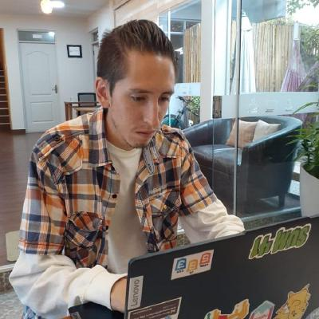

Developer Web | Amante de los animales y la creatividad

Hola, soy Rodrigo Bustos, un apasionado developer web. Me encanta crear experiencias digitales limpias, modernas y funcionales. Además de programar, disfruto aprendiendo sobre nuevas tecnologías y compartiendo mi amor por los animales. Creo que la creatividad y la pasión son la clave para construir proyectos increíbles.
Colegio: CEILAB
Carrera profesional: Ingeniería de Sistemas en la UPDS
Empresa: CoreDevSystem
Empresa: Creative-Games
Me gusta desarrollar Páginas Web Por gusto y a modo de práctica, de vez en cuando y en mis tiempos libres creo y edito videos para mi canal de youtube, me estoy dedicando al desarrollo de mi página para mi empresa Creative-Ga🎮es, me gustan los animales, en especial los perros de raza Husky, sueño con tener una cabaña en un bosque como un refugio en la naturaleza a modo de desconectarme de todo .